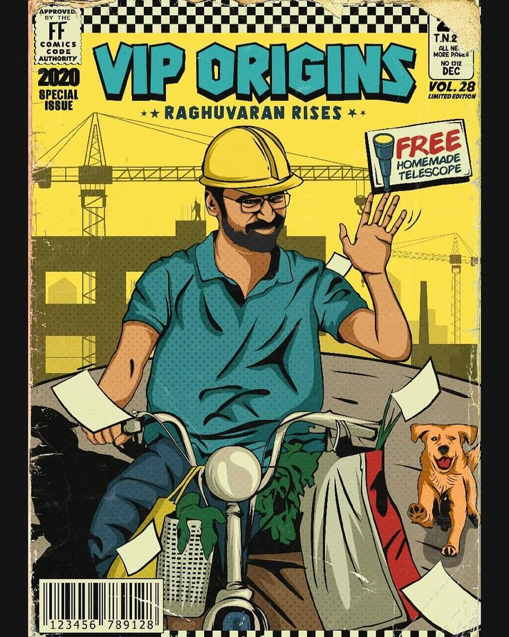
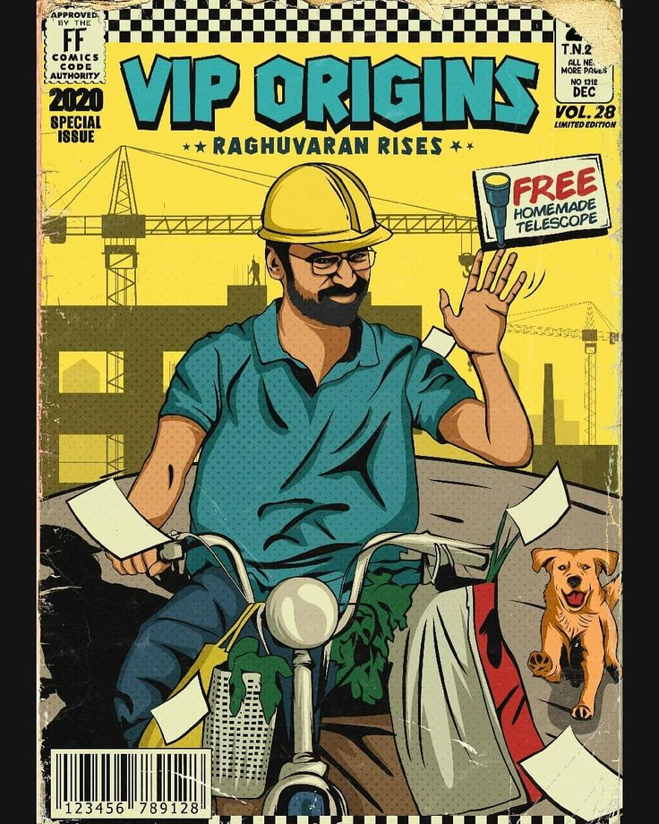

.png)
Welcome to Blockbuster, your premier hub for box office collection forecasts! As avid cinephiles and industry aficionados, we understand the allure and anticipation surrounding upcoming movie releases. At Blockbuster, we merge our passion for film with cutting-edge analytics to deliver unparalleled insights into the future of cinema earnings.
Within the vast realm of entertainment, navigating the landscape of box office success can be akin to traversing uncharted territory. However, armed with our expertise and data-driven approach, we aim to provide you with a roadmap to box office triumph.
At Blockbuster, our prediction methodology is multifaceted and robust. We meticulously analyze a myriad of factors, including but not limited to, pre-release buzz, star power, genre trends, marketing strategies, and audience demographics. By synthesizing these variables, we construct predictive models that offer a glimpse into the potential financial performance of upcoming releases.
Our team of seasoned analysts combines industry experience with technological prowess to ensure the accuracy and reliability of our forecasts. We delve deep into historical box office data, scrutinize market trends, gauge social media sentiment, and deploy advanced statistical techniques to refine our predictions.
One of the cornerstones of Blockbuster's approach is our commitment to transparency and agility. We understand that the entertainment landscape is dynamic, with trends evolving rapidly and audience preferences shifting constantly. Therefore, we continuously update our predictions to reflect emerging market dynamics, ensuring that you have access to the most up-to-date insights.
At Blockbuster, we cater to both casual moviegoers and industry professionals alike. Whether you're a film enthusiast looking to make informed viewing choices or a stakeholder in the entertainment industry seeking strategic guidance, Blockbuster has you covered.
Our platform provides comprehensive coverage of a diverse range of films, from mainstream blockbusters to indie gems. We believe that every movie deserves attention, and our predictions strive to shed light on both the potential sleeper hits and the highly anticipated tentpole releases.
Join us at Blockbuster as we embark on a cinematic journey fueled by data-driven foresight and a passion for storytelling. Let us be your trusted companion in deciphering the mysteries of box office success, and together, let's unlock the potential of World Cinema's next big hits!
 



Steps To Perform The Box-Office Prediction
1. **Movie Selection**: Choose the movie you're interested in predicting the box office performance for. This could be an upcoming release or a recently released film.
2. **Input Information**: Provide relevant details about the movie, such as its genre, cast, director, release date, and any notable promotional activities or buzz surrounding it.
3. **Analysis**: Our platform analyzes historical box office data, market trends, and audience sentiment to predict the potential earnings of the selected movie. We consider factors like the popularity of the cast, the genre's historical performance, and the timing of the release.
4. **Prediction**: Based on the input information and our analysis, we generate a prediction of the movie's box office performance. This prediction provides insights into the expected revenue range and helps you gauge the potential success of the movie.
5. **Follow-Up**: Keep track of the movie's actual box office performance compared to our prediction. This allows you to assess the accuracy of our forecast and provides valuable feedback for future predictions. Additionally, our platform continues to update its predictions based on evolving market dynamics and audience trends.
By following these steps, you can gain valuable insights into the potential box office success of movies, aiding in decision-making for moviegoers and industry professionals alike from our website.
Disclaimer: Users are cautioned that box office predictions are not infallible and may not always reflect real-world outcomes accurately. Financial decisions should not rely solely on these forecasts. Users are advised to conduct independent research and understand the inherent risks associated with investing based on predictions.
Note:- For any Technical Difficulties Contact 9488990495 (Developer of this Website)